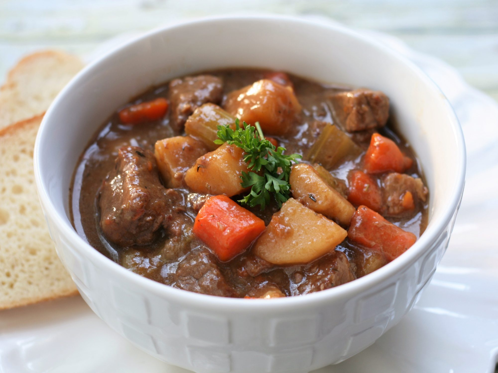

Beef Stew

Description
The perfect meal for a cold day. A hearty dish that combines beef
with a variety of other ingredients, such as potatoes, vegetables,
herbs, spices, and broth to create a savory dish, rich in flavor
and often served as the main dish.
Ingredients
- 1 cup flour
- 1 teaspoon garlic powder
- 1 teaspoon salt
- 1 teaspoon ground black pepper
- 3 pounds cubed beef stew meat
- ¼ cup vegetable oil
- 1 onion, minced
- 4 cups beef broth
- 1 teaspoon dried rosemary
- 1 teaspoon dried thyme
- 2 bay leaves
- salt and ground black pepper to taste
- 3 large potatoes, peeled and cubed
- 4 carrots, peeled and chopped
- 4 stalks celery, chopped
- 2 teaspoons cornstarch
- 2 teaspoons cold water
- 1 cup frozen peas